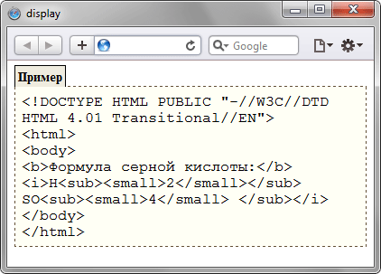

display
Многоцелевое свойство, которое определяет, как элемент должен быть показан в документе.
Краткая информация
| Значение по умолчанию | inline |
|---|---|
| Наследуется | Нет |
| Применяется | Ко всем элементам |
Синтаксис
display: block | inline | inline-block | inline-table | list-item | none |
run-in | table | table-caption | table-cell | table-column-group | table-column |
table-footer-group | table-header-group | table-row | table-row-groupЗначения
- block
- Элемент показывается как блочный. Применение этого значения для строчных элементов, например <span>, заставляет его вести подобно блокам — происходит перенос строк в начале и в конце содержимого.
- inline
- Элемент отображается как строчный. Использование блочных элементов, таких как <div> и <p>, автоматически создаёт перенос и показывает их содержимое с новой строки. Значение inline отменяет эту особенность, поэтому содержимое блочных элементов начинается с того места, где окончился предыдущий элемент.
- inline-block
- Это значение генерирует блочный элемент, который обтекается другими элементами веб-страницы подобно строчному элементу. Фактически такой элемент по своему действию похож на встраиваемые элементы (вроде <img>). При этом его внутренняя часть форматируется как блочный элемент, а сам элемент — как строчный.
- inline-table
- Определяет, что элемент является таблицей как при использовании <table>, но при этом таблица является строчным элементом и происходит её обтекание другими элементами, например, текстом.
- list-item
- Элемент выводится как блочный и добавляется маркер списка.
- none
- Временно удаляет элемент из документа. Занимаемое им место не резервируется и веб-страница формируется так, словно элемента и не было. Изменить значение и сделать вновь видимым элемент можно с помощью скриптов, обращаясь к свойствам через объектную модель. В этом случае происходит переформатирование данных на странице с учётом вновь добавленного элемента.
- run-in
- Устанавливает элемент как блочный или строчный в зависимости от контекста.
- table
- Определяет, что элемент является блочной таблицей подобно использованию <table>.
- table-caption
- Задаёт заголовок таблицы подобно применению <caption>.
- table-cell
- Указывает, что элемент представляет собой ячейку таблицы (<dd> или <th>).
- table-column
- Назначает элемент колонкой таблицы, словно был добавлен <col>.
- table-column-group
- Определяет, что элемент является группой одной или более колонок таблицы, как при использовании <colgroup>.
- table-footer-group
- Используется для хранения одной или нескольких строк ячеек, которые отображаются в самом низу таблицы. По своему действию сходно с работой <tfoot>.
- table-header-group
- Элемент предназначен для хранения одной или нескольких строк ячеек, которые представлены вверху таблицы. По своему действию сходно с работой <thead>.
- table-row
- Элемент отображается как строка таблицы (<tr>).
- table-row-group
- Создаёт структурный блок, состоящий из нескольких строк таблицы аналогично действию <tbody>.
Пример
<!DOCTYPE html>
<html>
<head>
<meta charset="utf-8">
<title>display</title>
<style>
.example {
border: dashed 1px #634f36; /* Параметры рамки */
background: #fffff5; /* Цвет фона */
font-family: "Courier New", Courier, monospace; /* Шрифт текста */
padding: 7px; /* Поля вокруг текста */
margin: 0 0 1em; /* Отступы вокруг */
}
.exampleTitle {
border: 1px solid black; /* Параметры рамки */
border-bottom: none; /* Убираем линию снизу */
padding: 3px; /* Поля вокруг текста */
display: inline; /* Устанавливаем как строчный элемент */
background: #efecdf; /* Цвет фона */
font-weight: bold; /* Жирное начертание */
font-size: 90%; /* Размер текста */
margin: 0; /* Убираем отступы вокруг */
white-space: nowrap; /* Отменяем переносы текста */
}
</style>
</head>
<body>
<p class="exampleTitle">Пример</p>
<p class="example">
<!DOCTYPE HTML PUBLIC "-//W3C//DTD HTML 4.01 Transitional//EN"><br>
<html><br>
<body><br>
<b>Формула серной кислоты:</b>
<i>H<sub><small>2</small></sub>
SO<sub><small>4</small>
</sub></i><br>
</body><br>
</html></p>
</body>
</html>Результат данного примера показан на рис. 1.

Рис. 1. Применение свойства display
Объектная модель
Объект.style.display
Примечание
Internet Explorer до версии 7 включительно:
- поддержка значений table-footer-group и table-header-group происходит только для тегов <thead> и <tfoot>;
- для элементов <li> понимает значение block как list-item;
- значение inline-block применяется только для строчных элементов, с блочными элементами работает некорректно.
Opera 9.2, а также Firefox 2.0:
- значение table-column применяется только для <col>;
- значение table-column-group поддерживается только для <colgroup>.
Chrome до версии 4, а также Safari до версии 5:
- значение run-in поддерживают только для элементов, которые располагаются перед строчными элементами или такими, у которых значение display установлено как inline.
Safari 3.1
- Значение table-cell не работает, если нет элементов со значениями свойства display: table и table-row.
Chrome 32
- Значение run-in больше не поддерживается.
Спецификация
| Спецификация | Статус |
|---|---|
| CSS Display Module Level 3 | Рабочий проект |
| CSS Ruby Layout Module Level 1 | Рабочий проект |
| CSS Grid Layout | Рабочий проект |
| CSS Flexible Box Layout Module | Возможная рекомендация |
| CSS Level 2 (Revision 1) | Рекомендация |
| CSS Level 1 | Рекомендация |
Браузеры
| Internet Explorer | Chrome | Opera | Safari | Firefox | |
| none, inline, block | 4 | 1 | 7 | 1 | 1 |
| inline-block | 5.5 | 1 | 7 | 1 | 3 |
| list-item | 6 | 1 | 7 | 1 | 1 |
| run-in | 8 | 1 | 7 | 1 | |
| inline-table | 8 | 1 | 7 | 1 | 3 |
| table, table-cell, table-column, table-column-group,table-header-group, table-row-group, table-footer-group, table-row, andtable-caption | 8 | 1 | 7 | 1 | 1 |
| Android | Firefox Mobile | Opera Mobile | Safari Mobile | |
| none, inline, block | 1 | 1 | 8 | 1 |
| inline-block | 1 | 1 | 8 | 1 |
| list-item | 1 | 1 | 8 | 1 |
| run-in | 1 | 8 | 1 | |
| inline-table | 1 | 1 | 8 | 1 |
| table, table-cell, table-column, table-column-group,table-header-group, table-row-group, table-footer-group, table-row, andtable-caption | 1 | 1 | 8 | 1 |